SENNHEISER（ゼンハイザー）
1945年設立のドイツのマイクロフォン・ヘッドフォン等音響機器専門メーカー。プロ用マイクロフォンメーカーとして定評があったが、1968年、世界初のオープンエアヘッドホンHD-414を発表、国内では1970年代初頭に紹介され、以降もっともポピュラーな海外ヘッドフォンブランドである。代理店については70年代から当サイト開設の直前（2008年）まで、一貫として「ゼネラル通商�梶vが代理店を務めた。(*)
製品の特徴として、一部の製品を除き採用していた「ゼンハイザーモジュラーシステム」というヘッドバンド・カプセル・イヤパッド・コード(*2)を簡単に交換できる設計がある。1990年前半まではポータブル用を含めほぼ全製品が対応していたが、90年代中盤から徐々にイヤパッド以外は交換の自由がないモデルが増え、現在（2014年8月）では、HD-650、HD-25�U(SPを含む）の2機種がモジュラーシステム対応である。
*2008年1月より、ゼンハイザー・ジャパンが代理店業務を引き継いだ。なおゼネラル通商は2011年8月に倒産した。
*2.コードに付属するプラグにより細かな製品バリエーションがあるモデルも存在する。
SENNHEISER（ゼンハイザー）の製品を以下のように分類する。（この分類は個人的な意見で、メーカーの分類ではありません）
*モデル名（型番）の「-」については1980年代末までのカタログ表記の様式だが、このサイトでは以降のモデルもそれに準じて表記している。
�T.HD-414系
スポンジイヤパッドのHD-414の系統のモデル。HD-450、480等は非スポンジパッドのモデルだが、同社のカタログでHD-414の後継機とされているため、この系統に含む。
(HD-414の系図）
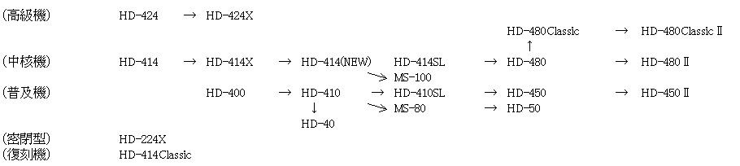
�@HD-414とその後継機
オープンエア型ヘッドフォンの原器ともいわれるHD-414は1968年に誕生した（日本への導入は1970年といわれる）。その後ヘッドバンドの改良、低インピーダンス仕様の追加などの改良を加えたHD-414X、大幅な軽量化を果たしたHD-414(NEW)、カプセルの大型化で低域特性の向上を果たしたHD-414SLと改良が続けられた。1995年にはゼンハイザーの50周年を記念してHD-414Classicが発売されている。また当サイトの守備範囲外だが2001年にも500台限定で再発されている。またカセットステレオ用のMS-80、MS-100、HD-50もスペックからみてHD-414系統のドライバーを使用していると思われる。
HD-414→ HD-414X → HD-414(NEWTIPE) → HD-414SL （復刻機） HD-414Classic
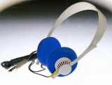 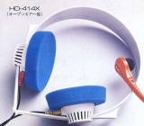 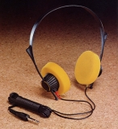 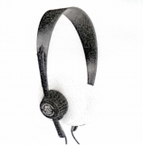 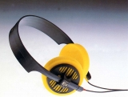 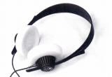
( 左からHD-414、HD-414X初期型 、 HD-414X、HD-414(NEWTIPE) 、HD-414SL、HD-414Classic ）
＊この系統で検聴用と思われる片耳型のレシーバー、HD-412が存在する。
�AHD-424とその後継機
HD-414のカプセルを大型化し、聴感上の周波数レンジを拡大した高級機。HD-424Xは1970年代後半から80年代初頭のヨーロッパ製ヘッドフォンを代表する機種であり、「Stereo
Sound 別冊-1978 Hi-Fiヘッドフォンのすべて」では三人の評論家（岡原 勝、菅野 沖彦、瀬川
冬樹）すべてが揃って推薦機種とした唯一のモデルだった。
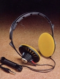
�B入門機
HD-414、HD-424からHD-414X、HD-424Xにモデルチェンジした時期に新設されたクラス。最初のモデルHD-400はケーブル固定式で当時の同社モデルで一般的だった「モジュラーシステム」でない機種。後に低インピーダンス仕様が追加され、その内容をほぼ引き継ぎ、「モジュラーシステム」対応としたのがHD-410。HD-414SLに合わせHD-410SLとなった。ケーブル固定式のより廉価なモデルとして導入されたのがHD-40。
HD-400＊ HD-40＊ HD-410→ HD-410SL ( ＊ モジュラーシステム対応外)
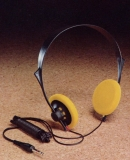 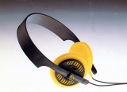
�C密閉型及びカセットステレオ用
HD-414、HD-424の時代には、密閉型としてHD-110が販売されていたが、このモデルは1.5mのショートコード・プラグなしで販売されており、オープンリールのレコーダー（STELLAVOX等）での音声モニター用で、組み合わせる機器にあわせ必要なプラグを取り付ける完全な業務用モデルだった。HD-414X、HD-424Xとともに導入されたのがモジュラーシステム対応のHD-224Xである。
またゼンハイザーがウォークマンなどカセットステレオ用に用意したのがMS-80、MS-100、HD-50。ミニプラグ付きのショートコード仕様だがモジュラーシステム対応なので標準プラグ付きのケーブルに簡単に交換できる。MS-100はHD-414級、MS-80、HD-50はHD-410級のスペックだった。
（密閉型） HD-110 HD-224X
（カセットステレオ用） MS-80 MS-100 HD-50
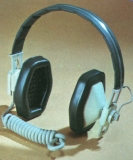 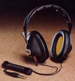 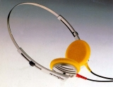
�Dネオジウム導入期のモデル
初のネオジウムマグネット採用モデルHD-540reference導入後、ゼンハイザーの代表機種はHD-414系列からHD-500番台の機種となった。この時代にHD-414系のドライバーをネオジウムマグネット化する等の改良を加えたモデルがHD-450、HD-480である。当初2モデルだったがやがてHD-480のリファインモデルとしてHD-480Classicが加わった。その後のHD-500番台の改良に合わせOFCケーブル化したのがHD-450�U、HD-480�U、HD-480Classic�Uである。
（高級機） HD-480Classic →
HD-480Classic�U
（中核機） HD-480→
HD-480�U
（普及機） HD-450 →
HD-450�U
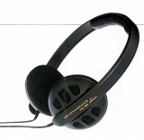
�U.ポスト414系
414系の「X」タイプ発売以降に発売された新素材（サマリュウムコバルト磁石等）を導入したモデル群。ネオジウムマグネッド導入前のモデル群。平行して同社を代表するHD-414系のモデルが販売されており知名度はあまり高くない。
（高級機） HD-430 HD-425
（軽量機） HD-420 →
HD-420SL
（密閉型） HD-222
（２ウェイ） HD-230
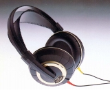 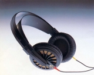
�V.ネオジウム導入期モデル
ゼンハイザーは他社よりかなり早い時期にHD-540reference(1986年発売）でネオジウムマグネッドを導入した。その導入期のモデルと改良型のモデル群。改良型（型番の末尾が「�U」のモデル）のポイントはOFCケーブルの採用だった。この当時のゼンハイザーのケーブルはHD-25と同じスチール素材の硬めのケーブルであり、加工精度も悪くタッチノイズがひどかったが、OFCケーブルにより改善された。また改良型のモデルから生産地がアイルランドへ移行している。
（最高級機） HD-560ovation → HD-560ovation�U
（高級機） HD-540reference → (referenceGOLD) → HD-540reference�U
（中核機） HD-530 → HD-530�U
（普及機） HD-520 →
HD-520�U
（密閉型） HD-250Linear → HD-250Linear�U
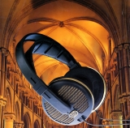 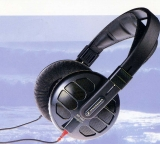 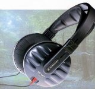
(左 HD-540referenceGOLD、中央 HD-560ovation�U、右 HD-250Linear�U)
�W.Expression
Line
モジュラーシステムの鍵である両出しケーブルを廃して、片出しケーブルを始めて採用したシリーズ。HD-450�U、HD-480�U、HD-480Classic�Uのラインに代わり登場した。当時の国内に流通したゼンハイザーでは珍しい300番台の型番を持っていたが、ごく短い期間でほとんど同じ内容の400番台の別型番のモデルに変更された。
（高級機） HD-340 → HD-475
（中核機） HD-330 → HD-465
（普及機） HD-320 → HD-455
＊ 全機種モジュラーシステム対応外
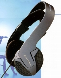
�X.Duofol振動板導入期のモデル
現在のゼンハイザーの中核技術「Duofol」振動板を導入したモデル群。初期のHD-580PRECISIONから580Jubileeまでは旧来のOFCケーブルだったが、それ以外のモデルではケブラーで補強されたヘッドフォン側の端子のデザインが違うケーブルに変更された。
（最高級機） HD-580PRECISION → (580Jubilee) → HD-600
（高級機） HD-565OVATION
（中核機） HD-545REFERENCE
（普及機） HD-535
（密閉型） HD-265LINEAR
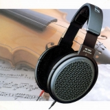 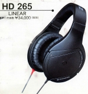
�Y.ポストモジュラーシステム系
最上級機とHD-25系以外すべて両出しケーブルを廃して、片出しケーブルとなった製品群。なお片出しケーブルはマイクロプラグ仕様で、ヘッドクッションは交換可能なモデルもあった。
（高級機） HD-590Prestige
（中核機） HD-570Symphony
（普及機） HD-500Fusion
（密閉型） HD-270Control HD-200Master
（軽量機） HD-495Silver HD-490Live HD-470Headmax
＊ 全機種モジュラーシステム対応外
＊このラインの製品には他に2001年発売のHD-575(\32,000、限定500台）が存在する。同時期のHD-200関連の限定モデルについては該当のページに記載した。
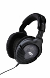 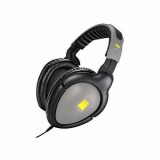
（番外：PA用？モデル）
通常のオーディオ用モデルが「HD」の型番を持つのに対し、「eH」の型番を持つPA等を用途とするモデルがある。楽器店などで扱われることが多い。本サイトの守備範囲では、2000年頃に2点存在した。
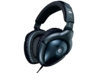
�Z.その他
コンデンサー型や無線機、ポータブル用機など。
（コンデンサー型） unipolar2000＊ HE90/HEV90＊ HE60/HEV70＊
（無線機） HDI434/SI434＊ HDI-234 SI-234＊ HDI2/SI2＊ IS490＊ IS550＊ IS850＊
（イヤホン） HD-44＊
（企画商品） HD-1000＊
＊ モジュラーシステム対応外
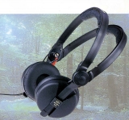 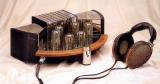 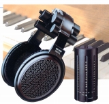
�[.プロセッサー
1999年頃発売したサラウンドプロセッサー。
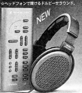
(LUCAS)